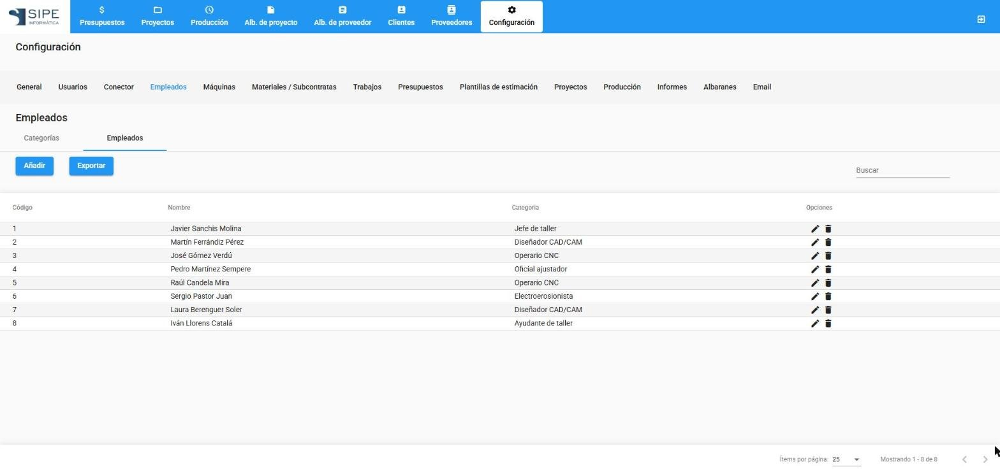
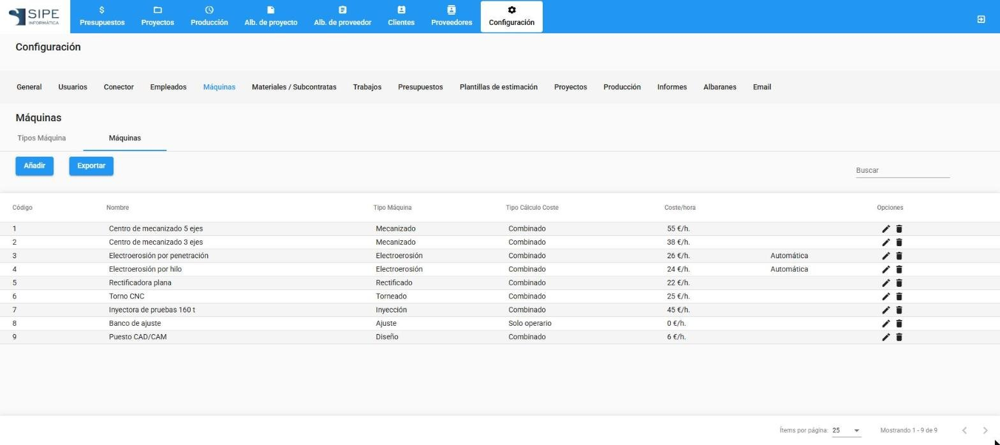
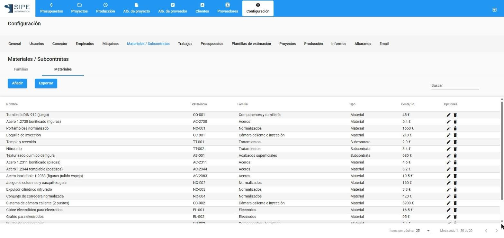
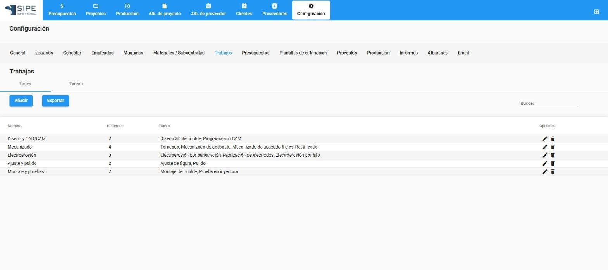
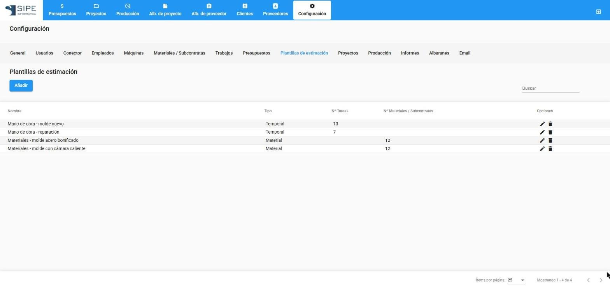
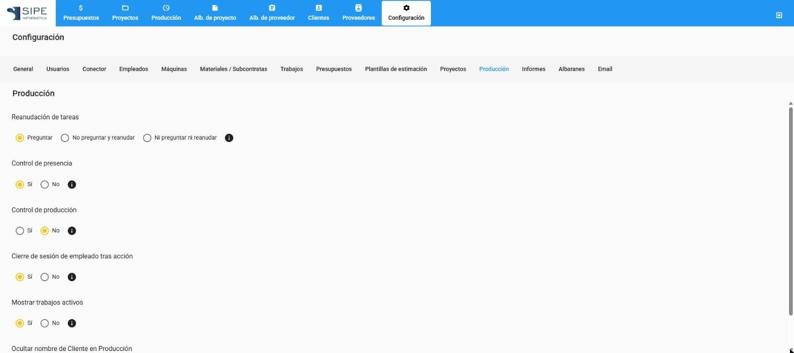
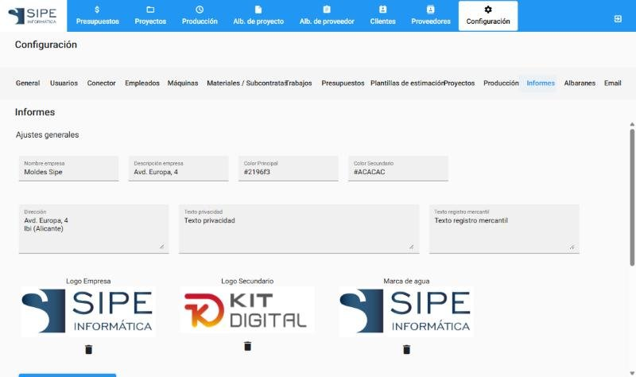

Pantalla de Configuración
Solo los administradores acceden a Configuración. Cada apartado está en la barra superior de la pantalla.
General
Datos de la empresa (razón social y CIF) e información de la aplicación.
Usuarios
Usuarios de acceso: nombre, email, contraseña y perfil (administrador o empleado).
Conector
Conexión con Classic Ges: dirección del módulo de importación y ruta de datos.
Empleados

Categorías: nombre, coste por hora y permisos (ver o modificar la situación del proyecto). Empleados: nombre, apellidos, código de fichaje, categoría, coste por hora propio (si es distinto del de su categoría) y tarea y máquina por defecto.
Máquinas

Código, nombre, tipo de máquina, coste por hora, si es automática y tipo de cálculo de coste (combinado, solo máquina o solo operario).
Materiales / Subcontratas

Familias y materiales: nombre, referencia, familia, coste por unidad, unidad de medida (unidades, kilos, litros), si es subcontrata y proveedor habitual.
Trabajos

Fases del proceso y tareas de cada fase, con su código, máquina habitual y coste por hora del operario. Son las que se usan en presupuestos, fichajes y situación del proyecto.
Presupuestos
Valores de las listas de la ficha técnica (características), validez de las ofertas y formas de pago.
Plantillas de estimación

Conjuntos de tareas (tipo temporal) o de materiales (tipo material) que se cargan de golpe en la estimación de un presupuesto.
Proyectos
Estado por defecto de los proyectos nuevos.
Producción

| Opción | Efecto |
|---|---|
| Reanudación de tareas | Al identificarse, preguntar si se quiere seguir con la última tarea, reanudarla sin preguntar o no hacer nada. |
| Control de presencia | Obliga a fichar la entrada antes de iniciar tareas. |
| Control de producción | Pide las piezas producidas al finalizar una tarea. |
| Cierre de sesión de empleado tras acción | Cierra la sesión del operario 5 segundos después de iniciar o finalizar una tarea. |
| Mostrar trabajos activos | Si nadie está identificado, el terminal muestra los trabajos en marcha. |
| Ocultar nombre de Cliente en Producción | No muestra el cliente en el terminal. |
Informes

Nombre y descripción de la empresa, dirección, colores, logo, logo secundario, marca de agua, textos de privacidad y de registro mercantil, y opciones de las fichas técnicas y del informe diario.
Albaranes
Series, ejercicios y servicios. Cada servicio tiene su margen de beneficio por defecto para tareas y materiales y su plantilla de ficha técnica. Se pueden importar desde Classic Ges.
Cuenta de correo de salida (cuenta, servidor SMTP, puerto, contraseña) y cabecera y pie de los mensajes. Pulsa Probar y guardar correo para comprobar que funciona.